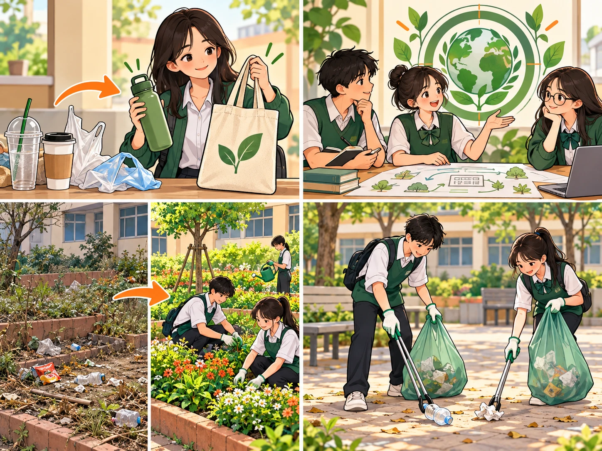
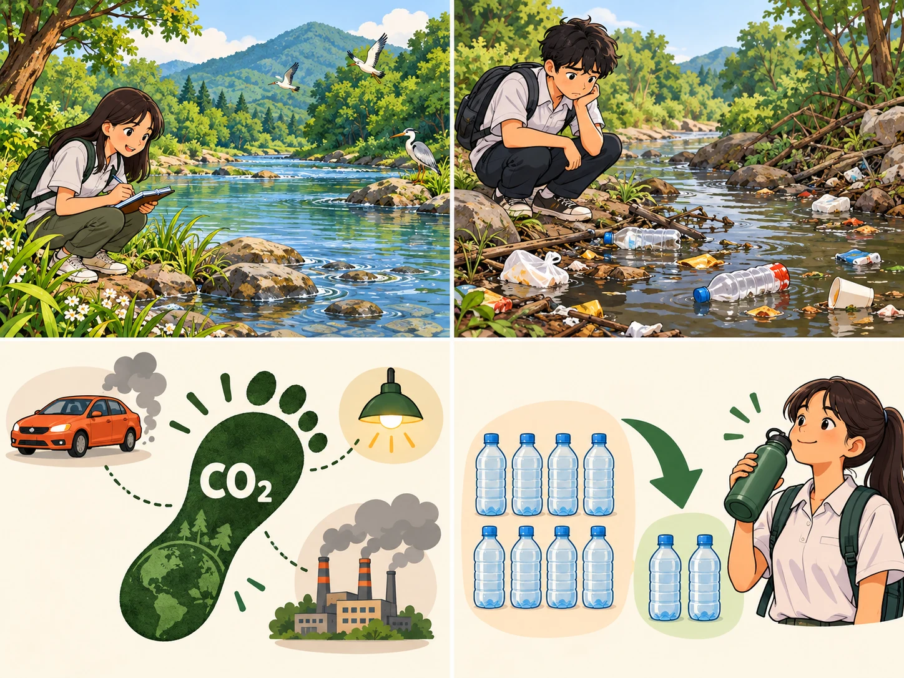
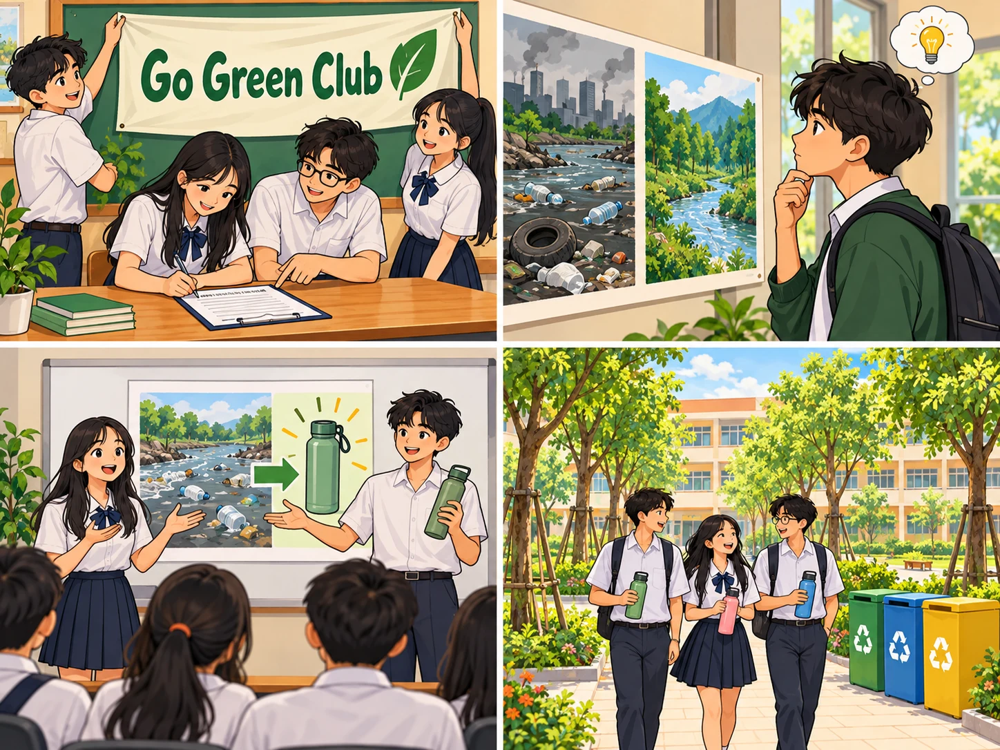

Go Green Club
Lesson 1 — Getting started
Five stops in 45 minutes
- 🎬
Watch & lead-in
Our planet & human impact
5 min - 📚
New words
Words and phrases for going green
8 min - 🎧
Listen & read
Nam and Mai · Tasks 1–4
20 min - 🎭
Interview
Join the club — convince the chairman
8 min - ✅
Wrap-up
Review + homework
4 min
By the end of this lesson…
- 🌍
Knowledge
Talk about a greener lifestyle; spot will vs be going to and the passive voice in a real conversation.
- 🤝
Core competences
Work in pairs and teams; speak up; care about what happens outside the classroom.
…and also
- 🌱
Personal qualities
Take responsibility for your school and your neighbourhood.
- 🤖
Digital & AI
10.C2.3 gather ideas with AI · 10.A1.2 check the data you find
Watch & lead-in
Tour the World · humans & the environment
5 minutesTour the World: What landscapes can you spot?
Watch the clip in teams. Write down as many natural landscapes & places as you can! Skip the clip. Ask the class instead: Name 5 natural landscapes or environments on Earth where humans live. Let teams race to write them on the board.
ocean mountain river forest desert island jungle coast
From our planet to our responsibility
1. Humans live across all these beautiful landscapes. How do human activities affect them? Pollution, deforestation, plastic waste, and greenhouse gas emissions are harming Earth’s ecosystems.
2. What should humans do to protect our environment? We need to adopt a greener lifestyle, reduce our carbon footprint, and take practical action — like the Go Green Club in today’s lesson!
New words
Listen · repeat · remember
8 minutes
adopt
(v) /əˈdɒpt/ áp dụng, bắt đầu thực hiện (lối sống, thói quen) We should adopt a greener lifestyle.aim
(v) /eɪm/ nhằm, hướng tới một mục tiêu We aim to reduce plastic waste at school.improve
(v) /ɪmˈpruːv/ cải thiện, làm cho tốt hơn Planting trees can improve our school environment.clean up
(phr. v) /kliːn ʌp/ dọn dẹp, làm vệ sinh Our club will clean up the school this weekend.
environmental
(adj) /ɪnˌvaɪrənˈmentl/ thuộc về môi trường Tree planting is an environmental activity.issue
(n) /ˈɪʃuː/ vấn đề cần quan tâm, giải quyết Plastic waste is a serious environmental issue.carbon footprint
(np) /ˌkɑːbən ˈfʊtprɪnt/ dấu chân các-bon: lượng khí nhà kính tạo ra Cycling to school can reduce our carbon footprint.reduce
(v) /rɪˈdjuːs/ giảm, làm giảm bớt We reduce plastic waste by using reusable bottles.
set up
(phr. v) /set ʌp/ thành lập, bắt đầu (câu lạc bộ, tổ chức) We want to set up a club to protect nature.awareness
(n) /əˈweənəs/ sự nhận thức, hiểu biết The talk raises our awareness of plastic pollution.raise awareness
(vp) /reɪz əˈweənəs/ nâng cao nhận thức Our posters raise awareness of plastic pollution.Listen & read
Tasks 1–4 · pages 18–19
20 minutesNam joins the Go Green Club · page 18
📖 Textbook, page 18
Listen twice, then read it aloud in pairs. First time: books closed — just listen.
Three key phrases to catch: set up (to start something) · raise awareness (to make people notice) · carbon footprint (the CO₂ you cause)
Answer the questions · page 19
1. Who set up the Go Green Club? The Youth Union in Nam’s school set it up.
2. Why was it set up? To improve the environment and encourage a greener lifestyle.
3. What does the club plan to do? Organise more activities to raise awareness.
Three more questions
4. What is the first activity? Cleaning up the school right after the ceremony.
5. Why does Nam want to join? He is keen to reduce his carbon footprint.
6. What does Mai tell Nam at the end? The time and place of the club meeting.
Match A with B · page 19 · 1–3
- 1. raise c — awareness
- 2. reduce d — your carbon footprint
- 3. clean up e — the school
Match A with B · page 19 · 4–5
- 4. adopt b — a greener lifestyle
- 5. set up a — a club
Look back at the conversation
1. The club ______ (set up) by the Youth Union last year. was set up
2. We ______ (clean) the school right after the ceremony — it’s all planned. are / ’re going to clean
3. I think I ______ (join) the club. will / ’ll join
Two futures…
be going to
A plan you already made.
We are going to clean up the school.
will
A decision you make as you speak.
I think I ’ll join the club.
…and one passive
Passive
Use it when who does it matters less than what gets done: The club was set up by the Youth Union.
The interview
Pairs — candidate and chairman
8 minutesWhy should we let you join?
…and what will you do next?
Two rules for your ideas
- 🔎
10.C2.3
Use AI or a search engine to collect green-action ideas for our school.
- 🧐
10.A1.2
Which ideas could our school really do? Cross out anything that sounds good but is not realistic.
Before you go
Today’s board
Words: adopt · awareness · carbon footprint · raise awareness · clean up
Collocations: adopt a greener lifestyle · reduce your carbon footprint · set up a club
Grammar: will vs be going to · passive voice
Name one thing you will do this week for the environment. I’m going to bring my own water bottle instead of buying plastic ones.
Homework
Homework
1. Workbook — Unit 2, Lesson 1.
2. Prepare for Lesson 2 — Language.
3. 10.C2.3 Find ideas for Go Green Weekend to use in the end-of-unit project.